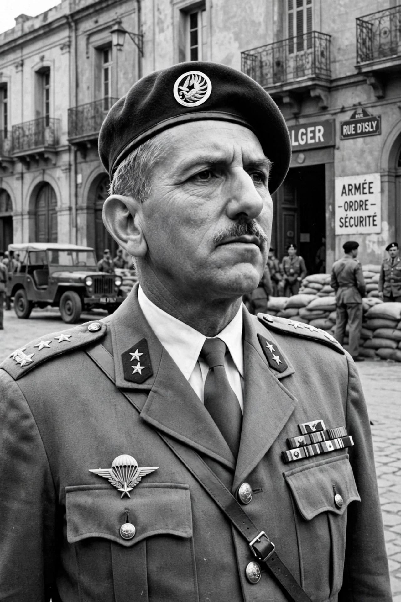

Jacques Émile Massu (5 May 1908 – 26 October 2002) was a French general who served in the Second World War, the First Indochina War, the Suez Crisis, and the Algerian War. He is best known for commanding the 10th Parachute Division during the Battle of Algiers in 1957, a campaign whose success against the FLN was achieved with methods — including the systematic use of torture — that made him one of the most controversial French officers of the twentieth century.
| Jacques Massu | |
|---|---|
 General Jacques Massu in paratrooper uniform with red beret, Algiers 1957 Massu in Algeria, 1957 | |
| Born | 5 May 1908, Châlons-sur-Marne, France |
| Died | 26 October 2002 (aged 94), Conflans-Sainte-Honorine, France |
| Allegiance | France |
| Service | French Army |
| Rank | Général d'armée |
| Commands | 10th Parachute Division; French forces in Germany |
| Battles | Second World War · First Indochina War · Suez Crisis · Algerian War |
Massu was born into a military family and graduated from the Saint-Cyr military academy. He served in colonial postings in Africa before 1939. Ralllying to the Free French, he fought with the Chad column of General Leclerc and then with the famous 2nd Armoured Division (2e DB), taking part in the liberation of Paris in August 1944 and the campaign into Germany. He later served in Indochina in 1945–46 and again in the early 1950s, and commanded French airborne forces in the Anglo-French landings at Port Said during the Suez Crisis of November 1956.
In January 1957, with FLN bombings striking Algiers, the resident minister Robert Lacoste granted Massu's 10th Parachute Division full police powers in the city. Massu imposed curfews, mass arrests, and a system of interrogation that relied extensively on torture. By the autumn of 1957 the FLN's urban network had been dismantled. The victory was tactical; politically it deepened the crisis of the Fourth Republic. The methods used became a lasting scandal in France, debated in works such as Henri Alleg's La Question (1958) and depicted in the film The Battle of Algiers (1966).
On 13 May 1958, as crowds and soldiers seized the Government General building in Algiers, Massu chaired the Committee of Public Safety that demanded the return of Charles de Gaulle to power — an intervention that helped bring down the Fourth Republic. He later fell out with de Gaulle over Algerian self-determination; an interview in January 1960 in which he criticised the president's policy led to his recall from Algiers days before the "week of the barricades." He subsequently commanded French forces in Germany. In his 1971 memoir La vraie bataille d'Alger he defended the use of torture as a tragic necessity, a position that returned to public debate in 2000–2001 when veterans including General Paul Aussaresses publicly admitted its routine use; Massu then conceded that torture had not been indispensable and that France should acknowledge it. He died in 2002, aged 94.
Categories: 1908 births · 2002 deaths · French generals · Algerian War